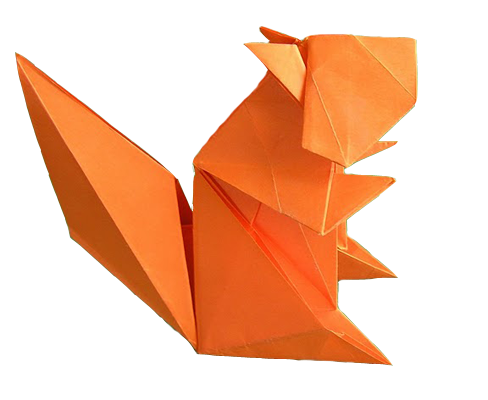

A técnica do origami, arte de dobrar papel, começou no Japão e propagou pelo mundo todo.
Sem data
de origem exata, sabe-se que iniciou em conjunto ao papel.
A dobradura de pássaro (tsuru) é talvez a mais conhecida.
Esse animal é tido na tradição japonesa como um símbolo de sorte,
longevidade e saúde.
Portanto, quem presenteia alguém com um origami de tsuru está
também desejando bons presságios e vida longa.
Além disso, na cultura japonesa existe a crença de que se uma pessoa
fizer mil origamis de tsuru e mantiver um pensamento elevado durante
a feitura, ela tem direito a fazer um pedido e esse se realizará.
clique no origami abaixo para apender a fazer!
